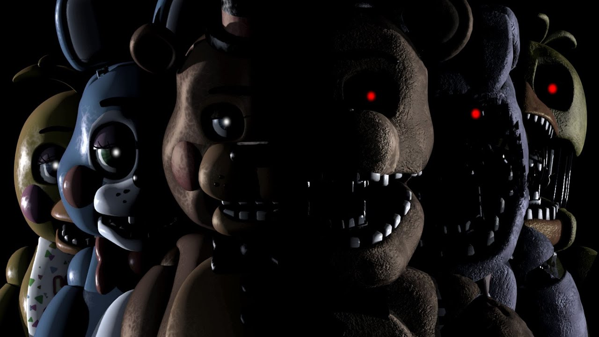
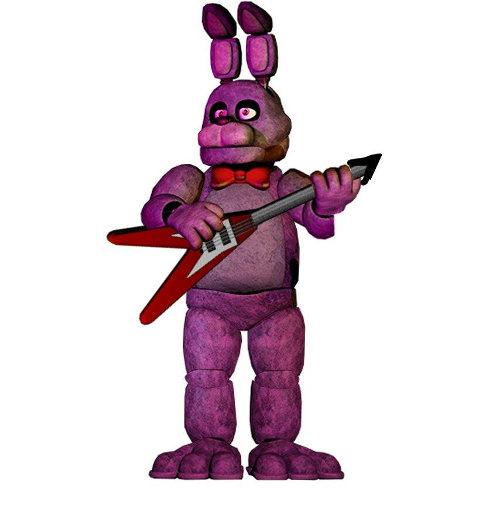
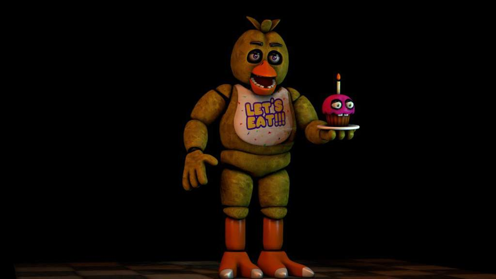
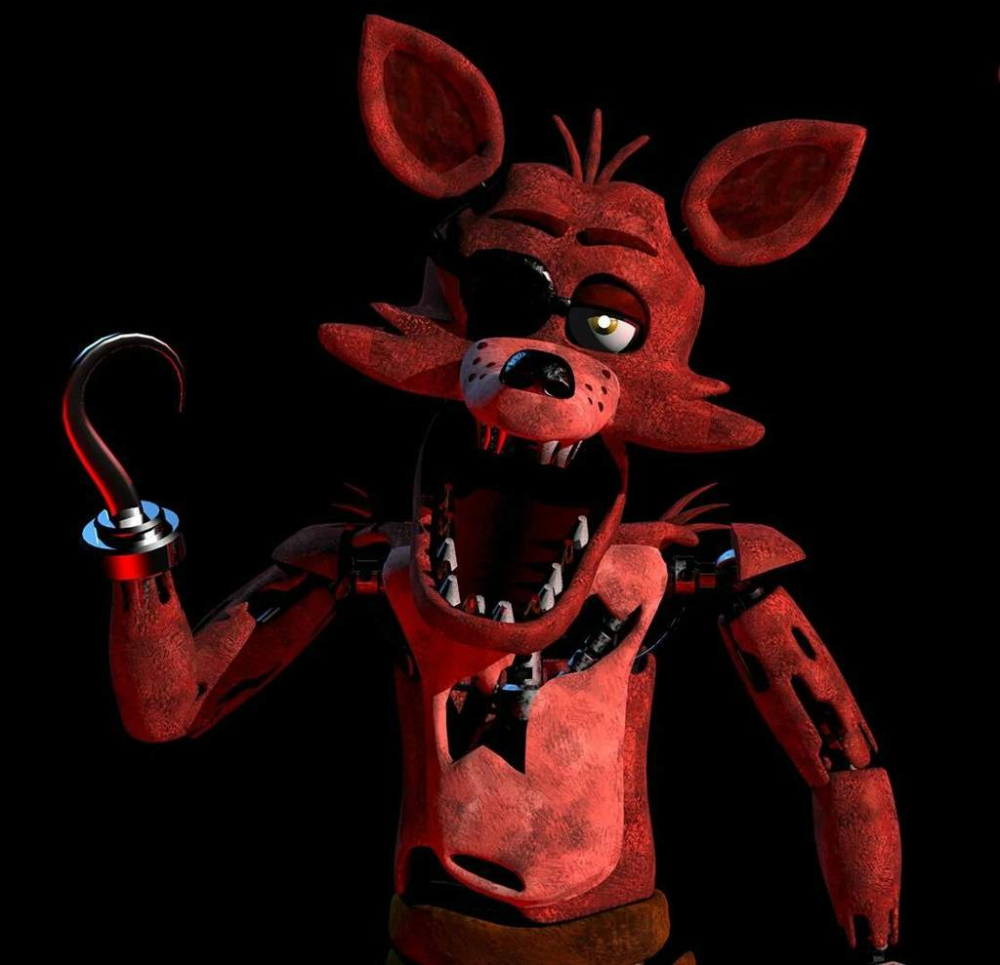
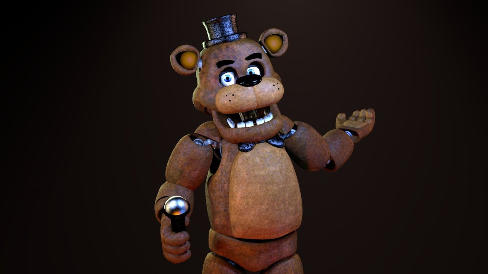

Первые две ночи мишка Фредди не будет трогать игрока. Исключением является та ситуация, когда вы полностью используете энергию аккумулятора. В этом случае Фредди Фазбер сразу же отправится в сторону вашего офиса чтобы напасть. Перед этим он на некоторое время остановится у открытых дверей как будто оценивая ситуацию. В это время будет проигрываться специфическая песенка и после того, как она завершится, мишка атакует охранника. В этом случае единственной надеждой выжить может оказаться то, что энергия закончится за час до утра и тогда вы возможно сможете дотянуть до конца смены. Если при появлении в офисе аниматроника не совершать никаких движений, то песенка будет звучать немного дольше, но не больше 20 секунд. Этого времени вам может хватить, чтобы наступило утро и вам засчитали успешное прохождение ночи.В зависимости от ситуации, аниматроник может передвигаться либо по левой части карты, либо по правой. Левая часть является маршрутом Фредди в ФНАФ 1 в случае отсутствия у вас энергии, а правая – во всех остальных ситуациях.
Начиная с третьей ночи Фредди со сцены начинает двигаться к охраннику в сторону правых дверей минуя при этом столовую, туалеты, кухню и восточный холл. Остановить его продвижение можно лишь пристально наблюдая за той комнатой, в которой сейчас находится мишка. Чем чаще вы смотрите на данного маскота, тем больше замедляете его продвижение в сторону офиса. Увидев Фредди за дверью, вы уже не сможете его отогнать, остается только закрыть правую дверь и надеяться, что хватит энергии до утра.
бонни Обычно из всех аниматроников первым начинает двигаться именно Бонни, и он всегда держится левой (западной) половины пиццерии. Бонни - единственный персонаж, который появляется в Служебном помещении и в Углу Западного коридора. Он передвигается намного быстрее, чем Фредди и Чика, отсюда и слухи о его способности телепортироваться. Бонни всегда входит в офис из западной половины пиццерии, причём всегда появляется в дверях, когда свет включён. Из всех аниматроников Бонни сложнее всего заметить на изображениях с камер, похоже, он умеет их отключать. Если он входит в офис, когда монитор поднят, он издаёт дребезжащий стон.
чика ярко-жёлтый аниматроник-курица с оранжевым клювом, похожим на утиный клюв, хохолком из трех перьев, рукоподобными крыльями, двумя оранжевыми пальцами на ногах и фиолетовыми глазами.
фокси второй по популярности персонаж, если не первый. Антропоморфный лис-пират. Всегда отличался отличным от остальных поведением и особой стратегией против него.
фредди маскот пиццерии и серии, антропоморфный медведь, лидер команды аниматроников.
золотой фредди таинственное, похожее на привидение существо, которое принимает форму желтого аниматронного медведя
 перейти на фотогалерею
перейти на фотогалерею